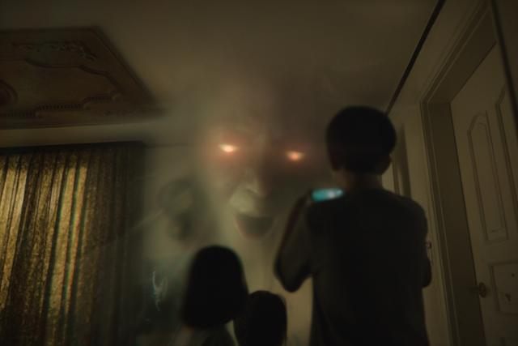
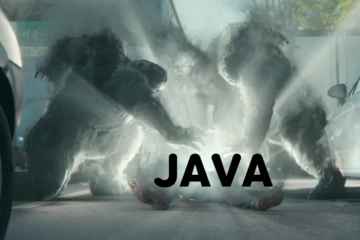

어느 날 기이한 존재로부터 지옥행을 선고받은 사람들.
충격과 두려움에 휩싸인 도시에 대혼란의 시대가 도래한다.
신의 심판을 외치며 세를 확장하려는 종교단체와 진실을 파헤치는 자들의 이야기.
주연 : 유아인, 김현주, 박정민
크리에이터 : 연상호, 최규석
주요 설정
1. 고지(告知)

'천사'라 불리는 반투명한 얼굴이 대상자 앞에 나타나
그의 이름을 말한 뒤 죽을 날짜와 시간을 예언한다.
2. 시연(試演)

고지한 시간이 오면 고지 대상자 근처에 3명의 사자들이 나타나고
그에게 여러 차례 물리적인 폭력을 행하며 고지받은 자에게 지옥에서 겪을 괴로움을 미리 보여준 다음,
마지막으로 세 사자가 고지자의 몸에 손바닥을 갖다대면 강렬한 빛이 뿜어져나와
결국 화장을 당한 것처럼 검게 그을린 골격 형태의 파편만 남는다.
그 후 사자들은 보이지 않는 벽으로 달려들어가듯 현세계에서 사라진다.
시연을 받는 도중에 일반적인 사람이라면 즉사하거나 기절할 정도의 충격이나 부상을 입었음에도
맨정신을 유지하는 것을 보아 시연 도중에는 지옥의 사자들이 시연을 받는 자를
지옥으로 보내기 전까지는 기절할 수도, 죽을 수도 없는 것처럼 보인다.